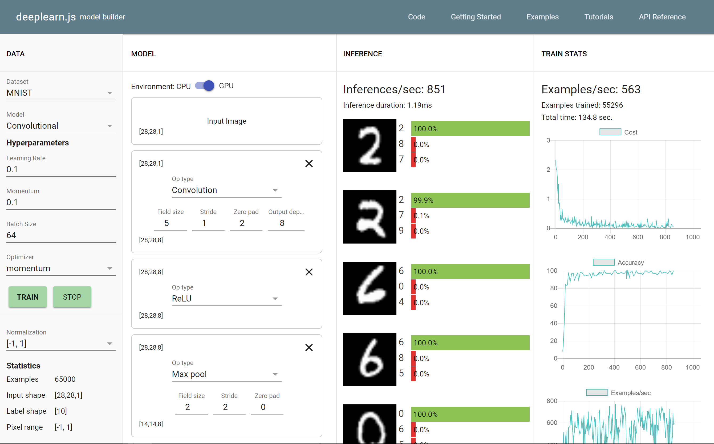

Introduction to Machine Learning
For Software Developers
Oliver Zeigermann / @DJCordhose
- German Abstract
- Exercise for audience: draw decision boundaries
- Wrapup
An Experiment
Customer ranking for automobile insurances
How would you rank me (47) for a car with 56 HP?
How would you automated that?
- What algorithm?
- How to implement that?
- Can you make the algorithm explain the predicted ranking?
Lines are Easy for Humans
KNN
How does programming work?
How does machine learning work?

However, practically, all that seems to work today is Supervised Machine Learning
Surprisingly, despite AI’s breadth of impact, the types of it being deployed are still extremely limited. Almost all of AI’s recent progress is through one type, in which some input data (A) is used to quickly generate some simple response (B)
Andrew Ng: https://hbr.org/2016/11/what-artificial-intelligence-can-and-cant-do-right-now
Main application of supervised Learning: Classification

Phases of Machine Learning
Demo #2:
Learning a continuous function
Second type of Supervised Learning

Choosing the right architecture
This is true for both Software Development as well as Machine Learning
What is architecture and what is learned model?
Architecture: a polynomial function of grade 2
y = a * x2 + b * x + c
Learnable parameters
a, b, c
Complete Model
Everything needed to reproduce the trained state: Architecture plus learned parameters
The right architecture depends on the specific problem
These points are much better matched with a line
deeplearn.js: Model Builder
Convolutional Neural Networks: A pretty complex Architecture
What can you do with this?
Asking such a question is a little bit like asking what can you do with book printing
These are really just the tools, what you make with it is only limited by your imagination
Just for your inspiration: some examples
- sentiment analysis
- https://www.microsoft.com/en-us/cloud-platform/cortana-intelligence
Another exciting Demo
How does Supervised Machine learning work for Classification?

https://teachablemachine.withgoogle.com/
Part of
Google AI Experiments
Wrapup
Introduction to Machine Learning for Software Developers
Oliver Zeigermann / @DJCordhose
http://bit.ly/ml-concept